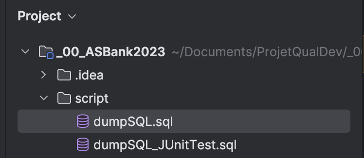
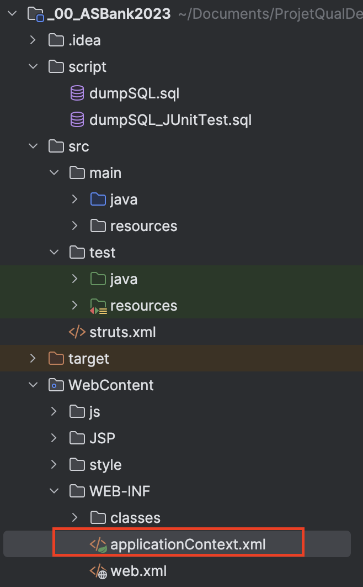
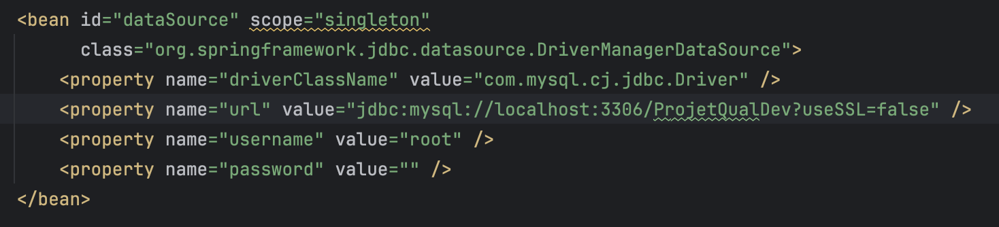
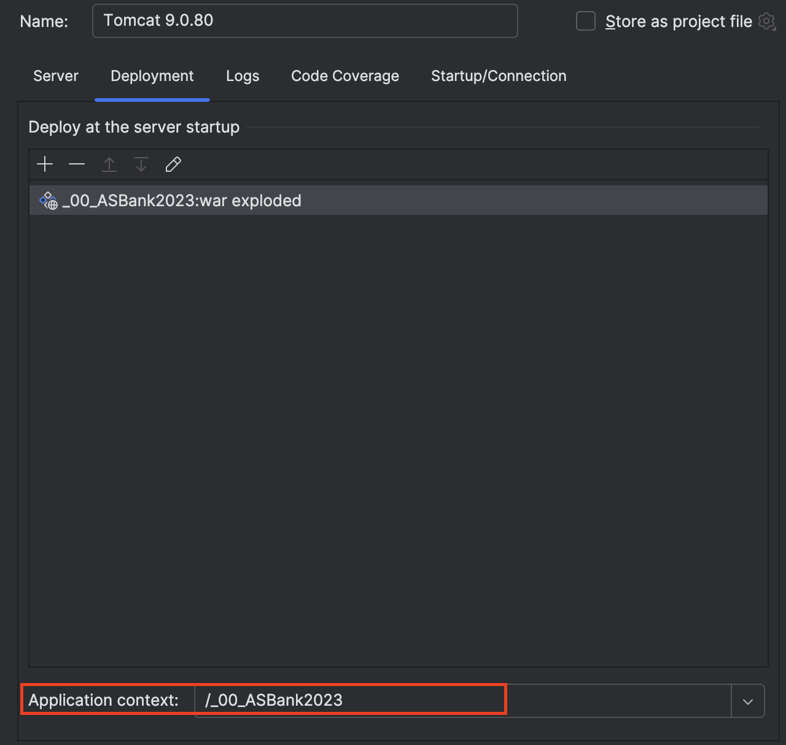
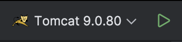
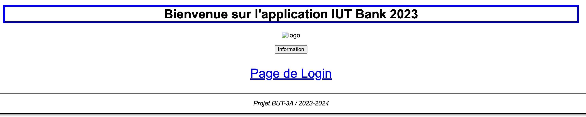

1. Installation d’IntelliJ IDEA :

2. Installation du Projet :

3. Installation du JDK 11 :


4. Installation de Tomcat 9 :

5. Configuration du Serveur Tomcat :

6. Importation et Déploiement sur Tomcat :


6. Installation XAMPP :

7. PHP MY ADMIN :

8. Création de la base de données :

9. Création des tables :
Accéder au dossier de scripts du projet
Intégrer le code des dossiers sur php-my-admin

10. Connexion entre la base de données et l'application :
Accéder au fichier de configuration :
Mise a jour des informations de connexion :
Remplacez le nom d'utilisateur et le mot de passe par ceux utilisés lors de la création de la base de données.
Modifiez l'URL pour y intégrer le nom de la base de données que vous avez créée.
11. Modification du Tomcat9 :
12. Démarrage de l'application :
